Welcome to the 2022 Page!
In 2022, the Boston Crusaders performed the show "Paradise Lost", based on the epic poem by John Milton of the same name. The Show follows the story of Adam and Eve, as they are thrown out of heaven, find themselves in the Garden of Eden, face temptation from the Devil in the form of a snake, and eventually cause their paradise, the Garden of Eden, to come crumbling down. The 2022 season was the most competitively successful season in the history of the corps, with a 2nd place finish at D.C.I. finals and a score of 97.325, a record high for the ensemble by nearly 3 points.
Season Gallery (Temporary Layout)
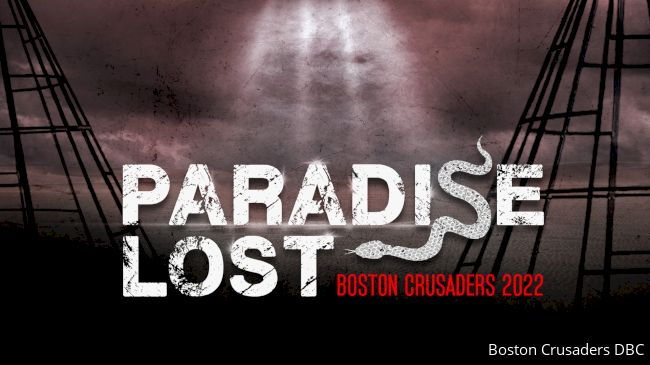
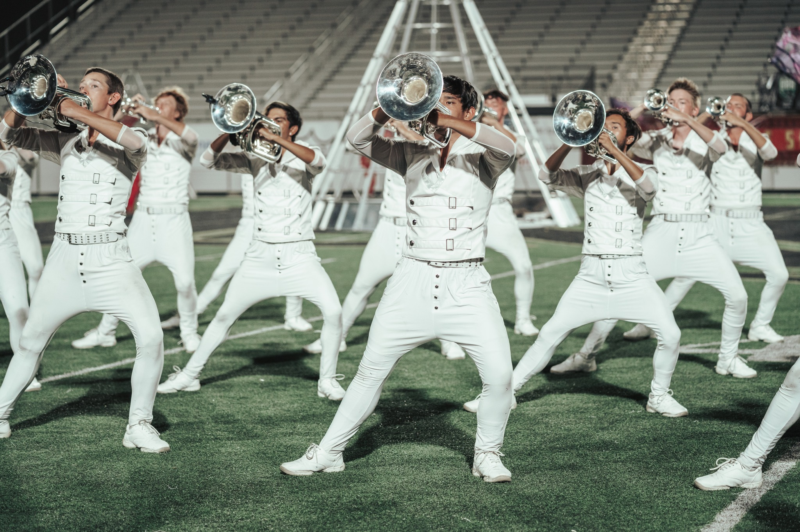
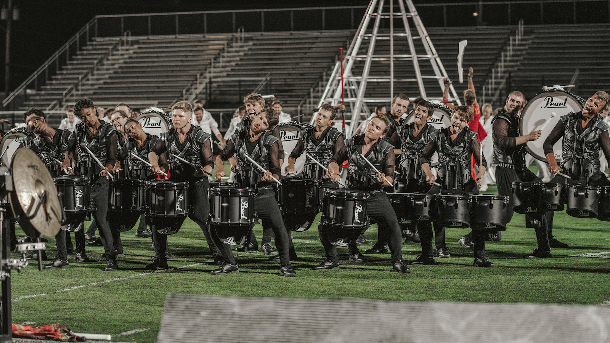
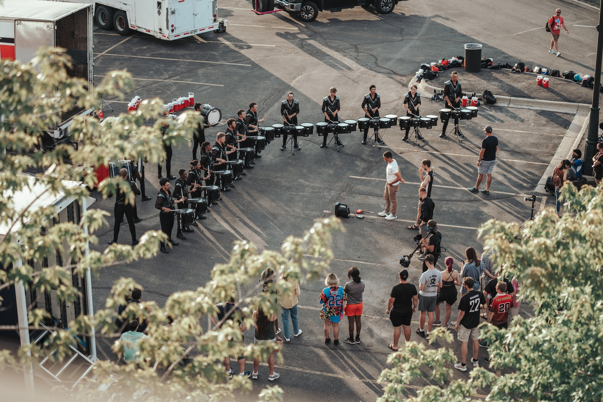
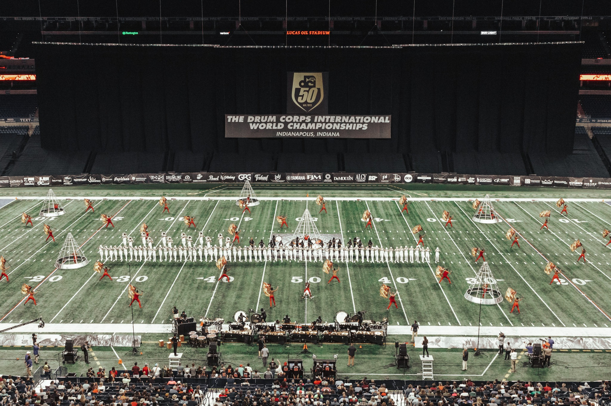
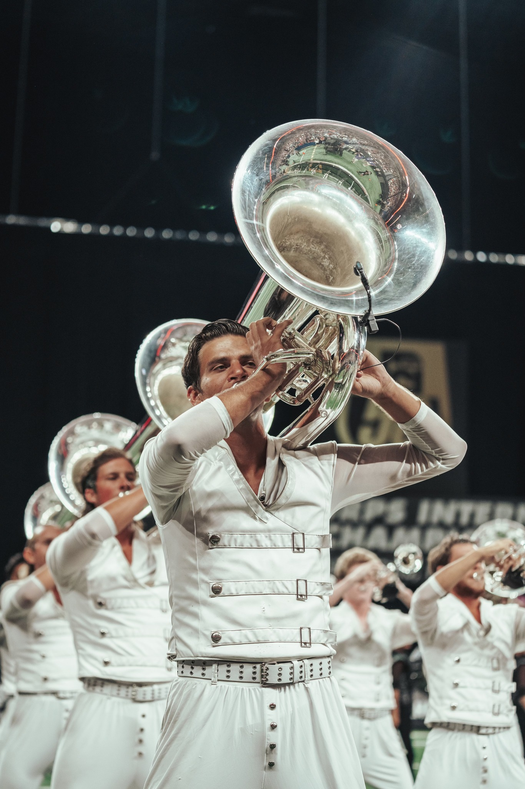
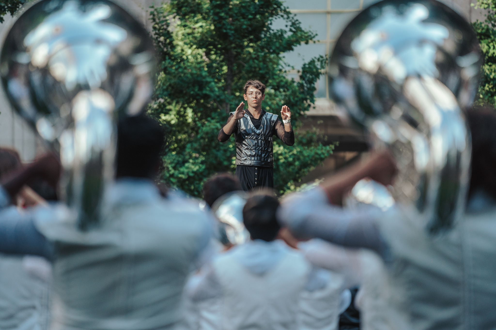
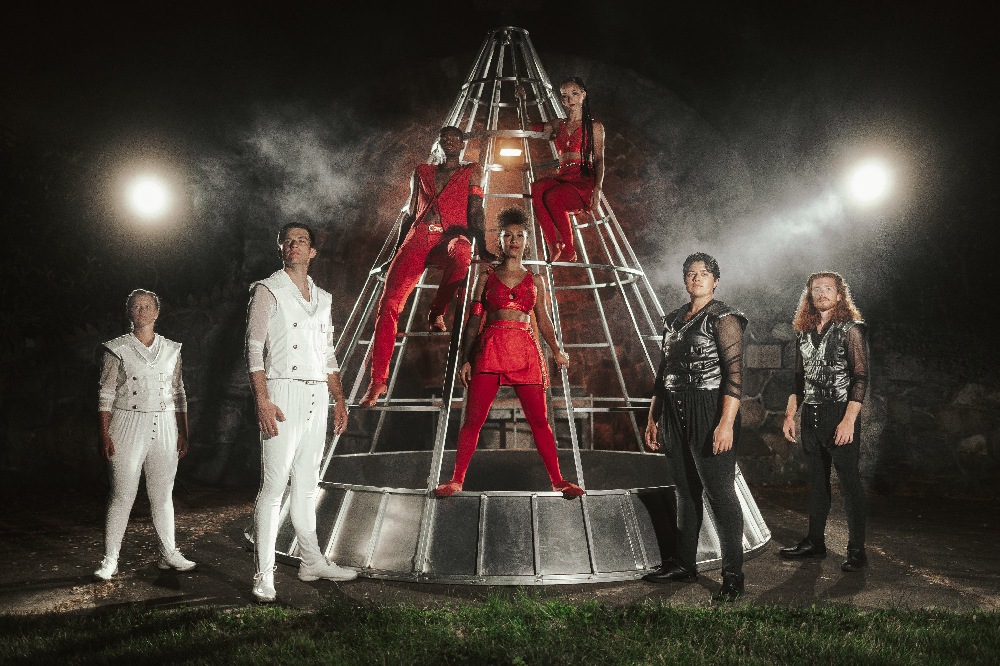
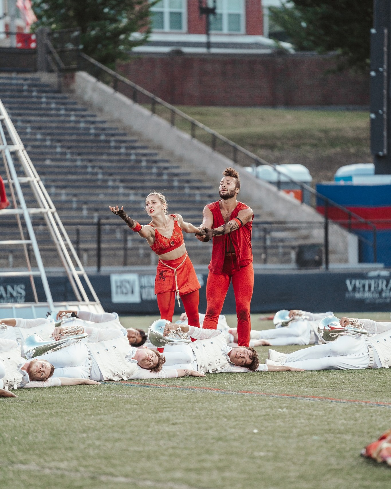
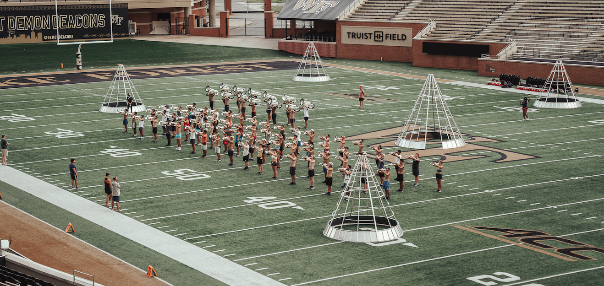
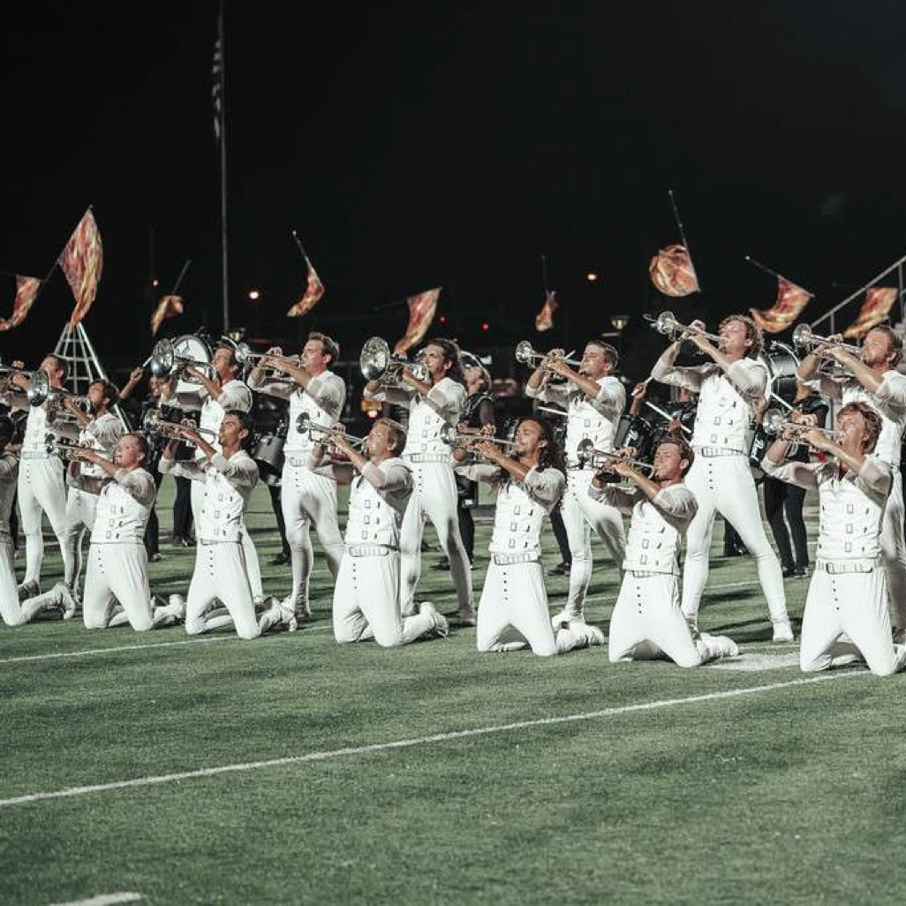